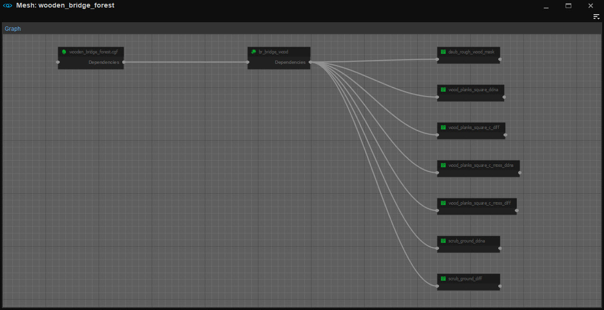

Overview
This tool is part of the Asset System and allows users to explore asset dependency. It shows asset dependencies as a graph.
The Dependency graph tool shows unresolved dependencies in red:

Opening in the Console
The tool is also accessible from the console, for example, the following command:
asset.show_dependency_graph objects/stones/Stone_Small_C.cgf.cryasset
will open a new instance of the tool for the asset.
Menu
The menus are as follows:
File
Option | Description |
|---|---|
Open | Lets you open the graph for an asset. |
Recent Files | Shows a list of assets you have opened recently. |
Toolbars
Option | Description | ||||
|---|---|---|---|---|---|
Customize... | Opens the toolbar customization window allowing users to customize existing toolbars, and/or create new toolbars within this tool. | ||||
Lock Toolbars | When disabled, the positions of toolbars and spacers within this tool can be changed by drag and drop. | ||||
Spacers | The following options allow users to use spacers in positioning their toolbars.
The Spacers menu options are only available when Toolbars → Lock Toolbars is disabled. | ||||
| Toolbars | Lists all default and custom toolbars (if any) created for this tool, allowing users to select which toolbar they'd like to hide or display. |
When a tool has a toolbar, whether this is a default one or a custom one, the options above are also available when right-clicking in the toolbar area (only when a toolbar is already displayed).
Window
Option | Description |
|---|---|
Panels | Lets you add the panels if you have closed them before. Graph - Shows the Dependency Graph. |
Reset layout | Resets the layout, opening any closed panels where they were when first starting the Dependency Graph. |
Help
Opens the documentation page for this tool.